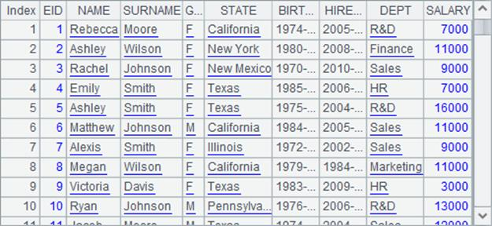
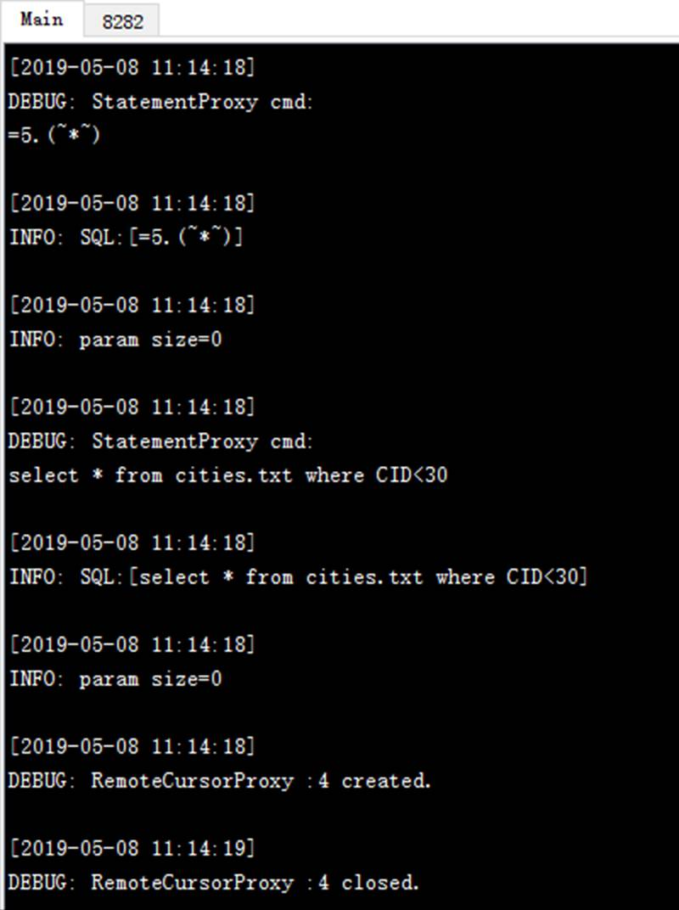

We can call a remote server in a calculation via esProc JDBC. Check The Server Cluster to learn more about the configuration and launch of the remote server. To invoke a remote server, we need to configure IPs and port numbers for every remote server in <Units> of the node <JDBC> in the configuration file raqsoftConfig.xml:
<JDBC>
<load>Runtime</load>
<gateway>executeSQL.splx</gateway>
<Units>
<Unit>192.168.0.197:8281</Unit>
</Units>
</JDBC>
When calling a script via JDBC in a Java application, the calculation will be performed locally unless there are problems with the local operation, like missing data files. In those cases, the calculation will be performed on the remote server. If we need to perform a calculation remotely in the first place, just add the parameter ?onlyServer=true to the connecting string. For example:
Class.forName("com.esproc.jdbc.InternalDriver");
con= DriverManager.getConnection("jdbc:esproc:local://onlyServer=true");
st = con.createStatement();
ResultSet rs1 = st.executeQuery("=5.(~*~)");
ResultSet rs2 = st.executeQuery("select * from cities.txt where CID<30");
The program exports ResultSets by executing a query. Here¡¯s the result:

We can check the system information about the calculation on the remote server¡¯s console:
